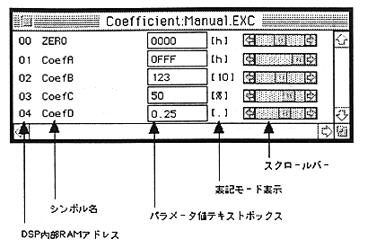
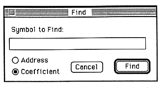

★
SOUND Manual
★
SCSP/DSPパラメータエディタユーザーズマニュアル
▲
戻る
｜ ■
SCSP/DSPパラメータエディタユーザーズマニュアル
3.pEdit使用方法
■編集対象データ
pEditがエディットの対象とするデータは、SCSP/DSPハードウエア上の、係数(COEF)RAM及びアドレス定数（ADRS）RAMの内容です。
■使用手順
1.実行形式DSPプログラムのロード
FileMenu - Open... により、エディット対象の実行形式ファイルを選択します。これにより、DSPプログラムがSCSP/DSPにダウンロードされるとともに、画面上には係数を編集するためのCoefficientウインドウ、アドレス定数を編集するためのAddressウインドウの２種類の
パラメータエディットウインドウ
が開きます。
2.パラメータのエディット
パラメータエディットウインドウ(7ページ)内でパラメータのエディットを行うには、次の２通りの方法があります。
パラメータの値が表示されているテキストボックス内に直接数値を入力する
スクロールバーをマウスで操作する
3.実行形式DSPプログラムのセーブ
パラメータをエディットした結果を保存したい場合は、FileMenu - Save / SaveAs... を実行することにより実行形式ファイル(拡張子「.EXC」)としてセーブすることができます。
■パラメータエディットウインドウ
パラメータエディットウインドウには、係数データをエディットするための「Coefficient」ウインドウ、アドレス定数データをエディットするための「Address」ウインドウの２種類があります。ここでは、「Coefficient」ウインドウ(下図)を例にとってその内容を説明します。

DSP内部RAMアドレス
係数(COEF)／アドレス定数（ADRS）の各シンボル名に対応するデータが格納されている、DSPハードウエア上の内部RAM内のアドレスです。
シンボル名
SCSP/DSPアセンブラ「dAsms」ソースコード上の係数／アドレス定数定義部分で使用した名称が表示されます。
パラメータ値テキストボックス
パラメータ値の表示／入力を行う部分です。SCSP/DSPアセンブラ「dAsms」ソースコード上において、係数／アドレス定数定義部分で各データごとに指定した表記モードに従った表示／入力ができます。表記モード、各表記モードにおけるデータの可変範囲、データの変換方法、入力可能な書式等については「
SCSP/DSPアセンブラユーザーズマニュアル/3.ソースコードの構成
」を参照してください。
表記モード表示
SCSP/DSPアセンブラ「dAsms」ソースコード上において、係数/アドレス定数定義部分で各データごとに指定した表記モードが表示されます。
スクロールバー
マウスで操作することによりデータが変更できます。
■Find機能
パラメータエディットウインドウ内において、エディットしたいパラメータのシンボル名がすぐに見つからない場合、Editメニュー内のFindコマンドを使用して、係数、アドレス定数のシンボル名を検索することができます。

Findコマンドを実行すると、上図のようなウインドウが現れます。テキストボックスに検索したいシンボル名を入力し、「Address/Coefficient」ラジオボタンの設定を行い、「Find」ボタンをクリックすると検索が実行されます。
▲
戻る
｜ ■
★
SOUND Manual
★
SCSP/DSPパラメータエディタユーザーズマニュアル
Copyright SEGA ENTERPRISES, LTD., 1997
 ★SOUND Manual
★SCSP/DSPパラメータエディタユーザーズマニュアル
★SOUND Manual
★SCSP/DSPパラメータエディタユーザーズマニュアル
★SOUND Manual
★SCSP/DSPパラメータエディタユーザーズマニュアル
★SOUND Manual
★SCSP/DSPパラメータエディタユーザーズマニュアル